Riprendo il discorso sui minerali organici.
Fra questi minerali vi è anche una inaspettata serie di idrocarburi, a vari atomi di carbonio e con vario tipo di legame.
Ne ricordo solo alcuni: Dinite, Idrialite, Kratochvillite, Hoelite, Flagstaffite, Refikite, Fichtelite, Simonellite, Evenkite, ecc.
Sono rinvenuti in varie località, per lo più associati a giacimenti carboniferi.
Per esempio la Ravatite C14H10 è chimicamente fenantrene (tre anelli benzenici condensati; guarda che bello, il minerale assomiglia alla struttura!).

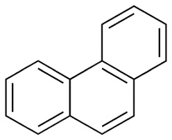
Si è formata probabilmente da una decomposizione lentissima di carbone a bassa temperatura.
Finora questo minerale è stato trovato solo in tre località: Alsdorf e Freital in Germania e a Ravat (località tipo) in Tagikistan.
Oltre agli idrocarburi, vi è una discreta serie di ossalati (di metalli vari), e non possono mancare naturalmente quelli di calcio, più o meno idrati.
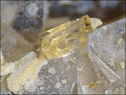
Come esempi, riporto solo tre ossalati di calcio, rispettivamente mono, di e triidrato: la Whewellite Ca(C2O4)·H2O); la Weddellite Ca(C2O4)·2H2O (il nome deriva dal mar antartico di Weddell) e la Caoxite Ca[C2O4]·3H2O, trovata anche da noi in Liguria.
Nostrana è anche la Minguzzite, ossalato di potassio e ferro K3Fe(C2O4)3·3H2O
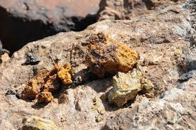
La Minguzzite si è formata dalla decomposizione di limonite di Capo Calamita nell'isola d'Elba. Scoperta nel 1955, è stata chiamata così in onore di Carlo Minguzzi, un mineralogista italiano dell'Università di Padova. Non è chiaro il suo processo di formazione.
Ora viene una serie di quattro minerali estremamente rari:
Dashkovaite, formiato di magnesio Mg(HCOO)2
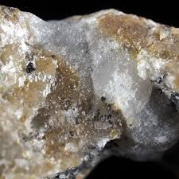
La Dashkovaite a livello mondiale sembra esistere solo in una sperduta località siberiana.
Si presenta come una massa porosa tenerissima biancastra microcristallina.
Formicaite, formiato di calcio Ca(HCOO)2
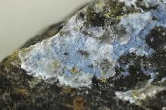
Anche questa estremamente rara, è stata trovata in depositi boriferi idrotermali, sempre in Siberia.
Abelsonite, è una nichel porfirina NiC31H34N4
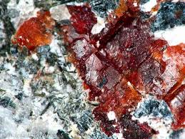
Il minerale, molto organico per così dire, è stato trovato nel 1969 solo in una formazione sedimentaria nello stato dello Utah. Prende il nome in onore del grande geochimico americano P.Abelson.
Earlandite, Ca3[CH2(COO)CHOH(COO)CH2(COO)]2·4H2O
Tutta questa formula per dire che è citrato di calcio.
Si può anche fare mettendo il classico guscio d'uovo nel succo di limone... ma qui è proprio un'altra cosa.
E' stata trovata su gusci di foraminiferi dei sedimenti di acque polari profonde.
L'Earlandite è tipicamente associata con i minerali di gesso nell'unica località nota: il Mare di Weddell nella parte occidentale dell'Antartide, a 2580 m di profondità.
Nemmeno Mindat ha la foto... se volete vedere il vero citrato di calcio dovete andare laggiù!
Strettamente legata alle condizioni ambientali è la Oxammite, ossalato di ammonio (NH4)2(C2O4)·H2O
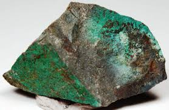
Si forma, assieme ad altri sali ammonici, nel guano di uccelli marini nell'Isola di Guanape, in Perù.
Vista la sua solubilità, esiste solo grazie alle particolari condizioni climatiche della zona.
Non poteva mancare lo ione ferrocianuro, sotto forma di Kafehydrocyanite K4[Fe(CN)6]·3H2O
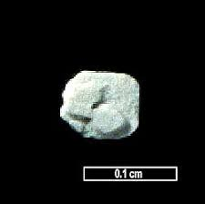
Trovata nei giacimenti d'oro di Tuva, in Russia e nel deposito di rame di Blyava negli Urali.
Si trova in questi siti nei pozzi minerari sotto forma di pallide concrezioni o piccole stalattiti.
Ma c'è un dubbio: si sospetta che il minerale possa essersi formato a causa dell'acqua inquinata da residui di cianuro impiegato per l'estrazione dell'oro. Vi sono versioni molto controverse in tal senso. Vista la sensibilità ambientale locale e l'inquinamento assoluto della Siberia, rimaniamo col dubbio...
Hoganite, acetato di rame Cu(CH3COO)2·H2O
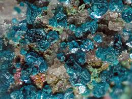
Gli acetati come minerali naturali sono rari (soprattutto perchè solubili); si è trovata Hoganite nei pressi della infernale miniera di Potosì, in Bolivia. Dico infernale perchè ho visto un eccezionale documentario sulla vita in questa miniera... cose che non si dimenticano. Qui l'Hoganite si è formata accanto Paceite (Cu+Ca) nei depositi di minerale per alterazione con materiale vegetale in decomposizione. E quindi in definitiva un minerale semi-antropico.
Non mancano addirittura minerali organici delle Terre Rare: la Zugshunstite (Ce,Nd)Al[(SO4)2|C2O4]·12H2O, la Levinsonite (Y,Nd,Ce)Al[(SO4)2|C2O4]·12H2O, la Coskrenite, come quella che si vede quì sotto (Ce,Nd,La)2[(SO4)2|C2O4]·8H2O... e complimenti al collezionista che li possiede!
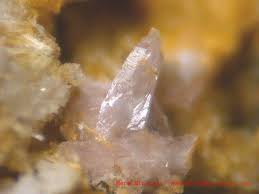
Questa che segue la aggiungo solo per il suo simpatico e impronunciabile nome: Zhemchuzhnikovite NaMg(Al,Fe)(C2O4)3·8H2O, Kazakhstan!
Il nome di questo ossalato ha fatto scappare perfino le foto...
Termino con un minerale per così dire famoso, la Calclacite, cloroacetato di calcio Ca(CH3COO)Cl·5H2O
La Calclacite è singolare perchè non è presente in natura.
Si è formata su alcuni minerali di calcio conservati nei musei, quando riposti (per meglio dire: abbandonati...) in cassetti o armadi di legno. Il legno in generale, ed in particolare quello di quercia, ha la proprietà di rilasciare lentamente piccole quantità di acido acetico, che può quindi reagire per un lungo periodo con le sostanze acido-sensibili contenenti calcio, formando appunto la Calclacite.
Mi immagino il serio e barbuto professore di quei bellissimi e polverosi musei di un tempo, quando all'apertura di un cassetto chiuso da secoli vede un microscopico cristallino.
Scorre immediatamente il poderoso database del suo cervello (un cervello da tanti "Giga"...) e scopre che ancora non è stato inserito!
-Ma questo è un minerale nuovo!- esclama tutto eccitato... e in quel momento nasce la Calclacite! (da cassetto)
Come è fatta? Più o meno così:
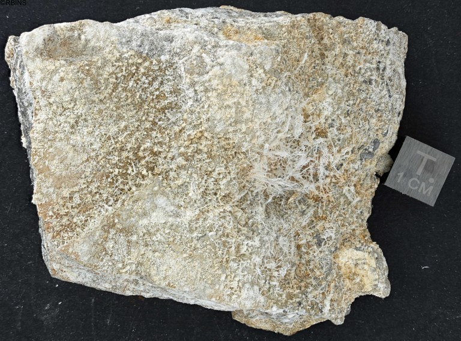